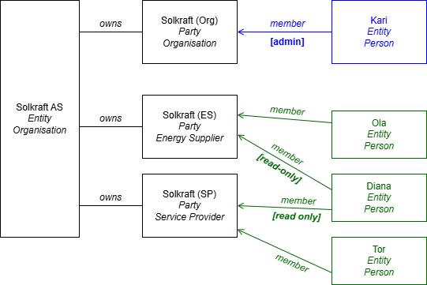
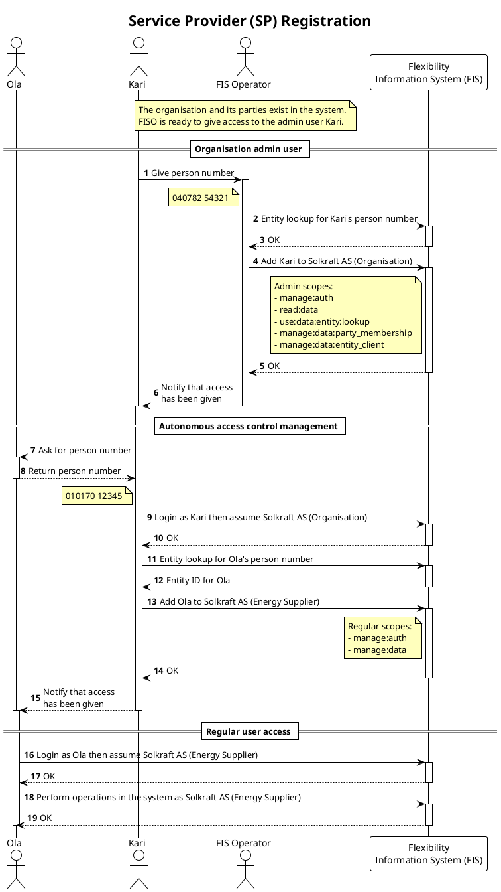

Auth
This document describes the authentication and authorization model, principles and concepts we are following in the Flexibility Information System. It is a quite comprehensive document and contains alot of nitty-gritty details - even about implementation. We are using it both as a design document and documentation. You can use it as a reference and for understanding how we are doing things.
The document assumes that you have some basic knowledge around the topic, such as the distiction between authentication and authorization, but we will try to add external links to relevant resources where appropriate (like we just did 😉).
Note
We use auth as a short form for authentication and authorization in this document.
Overview
We think of auth as a layered system, where each layer has a specific purpose and responsibility. The layers are independent of each other and a request is required to pass all the layers to be allowed access. The following diagram shows the layers we have in our model.

The layers in the auth model are there to protect our resources. These resources
take the form of data or remote procedure calls (RPCs) in our APIs. You can
think of a resource as a path in our API, e.g. /api/v0/controllable_unit/.
Authorization protects what actions (create, read, update, delete, call) the
user can do on the resources.
- Session or token validation - This is how we authenticate the user. Once authentication is done we know the entity, party and scopes of the user. If there is no session or token the user enters the system as an anonymous user with read access.
- Scope check - Empty scope means no access. The scope check validates actions on resources, e.g. does the user have the scope to do update on this resource.
- Party type check - Actions on some resources might only be accessible for
certain party types, like the
Flexibility Information System OperatororSystem Operator. For these resources we have an explicit party type check for additional security, e.g. is the party type of the user allowed to do call this resource. We typically use this on RPC resources. - Field Level Authorization - FLA controls access for the combination of party type, action and fields, e.g. can this party type update these fields on this resource.
- Resource Level Authorization - RLA controls access for the specific party and resource, e.g. can this party delete this resource.
Read more details about the layers further down in this document.
Actions
When we talk about authorization we usually talk about performing "actions" on resources or fields. The table below shows the actions and their corresponding HTTP methods and database grants.
| Action | HTTP verb | Database grant | Usage |
|---|---|---|---|
| Create | POST | INSERT | |
| Read | GET | SELECT | |
| Update | PATCH | UPDATE | |
| Delete | DELETE | DELETE | |
| Call | POST | EXECUTE | Used for RPC type endpoints. |
We do not model List as a specific action even tho it is a verb - someting a
user can do - on the API. It is covered by Read.
OAuth 2.0 and OpenID Connect standards
We are relying on the patterns and flows established as part of multiple RFCs related to OAuth 2.0 as well as OpenID Connect. Relevant RFCs are listed below, but you can also check the map of OAuth 2.0 specs from Okta.
- RFC6749 - The OAuth 2.0 Authorization Framework
- RFC6750 - The OAuth 2.0 Authorization Framework: Bearer Token Usage
- RFC7636 - Proof Key for Code Exchange by OAuth Public Clients
- RFC7523 - JSON Web Token (JWT) Profile for OAuth 2.0 Client Authentication and Authorization Grants
- RFC8693 - OAuth 2.0 Token Exchange
The implementation follows only parts of these standards, but we are trying to comply with the specification for the parts we actually implement.
We are also relying heavily on the JOSE (Javascript Object Signing and Encryption) suite of specifications.
Distinct API for authentication
Note that authentication and the rest of the Flexibility Information System
work as two separate services, and as such, are exposed through distinct
APIs. The endpoints can be reached by using the /api or
/auth/ prefixes in the URL used to access the Flexibility Information
System APIs. In the rest of this page, we use the terms main API and auth API
to distinguish these distinct roots of API endpoints.
Authentication model
In this section, we describe the authentication model in the Flexibility Information System.
Identity
Any system or person interacting with the Flexibility Information System will always be authenticated as a legal og natural entity, possibly assuming the role of a market party. The entity and party together make up the identity of the user.
The entity has very little functionality available in the system, most functionality will be available after assuming a party. The identity of the user is then the combination of the entity and the party they are acting as. As a result, in order to interact properly with the Flexibility Information System, an entity must assume a party.
Inspiration for this step is taken from Altinn, where one is presented with a list of parties upon login. The Elhub portal also has the same type of logical mechanism.
 .
.
The concept is also inspired by AWS AssumeRole.
Assuming a party is done using Token Exchange or directly in authentication using JWT Bearer grant. To assume a party, the entity must be a member of the party.
Entity - individuals and organisations
The entity is the natural or legal person using the system. This is the "raw" identity of the user when it enters the system.
- Natural entities are individuals identified by their national identity number (fødselsnummer) or D-number.
- Legal entities are organisations identified by their organisation number (organisasjonsnummer).
In a production setting, the identity of the entity will be established through mechanisms such as IDPorten, Maskinporten or enterprise certificates.
Party - market actors
This is the market party like a system operator or service provider. Parties in
the European energy sector are typically identified by a GLN or EIC-X. After
being authenticated as an entity, the user can assume a party to
interact with the system.
We have two extra party types in addition to the other market actors: end users and organisations. An end user is either a person or an organisation. The organisation party is a way for the user to have access to a special role to perform modifications on their own organisation entity. They can for instance give total or partial (via delegation mechanisms) access to what the entity owns and manages, to people from the same company.
We have the following party types in the Flexibility Information System:
| Abbreviation | Code | Name | Norwegian name |
|---|---|---|---|
| BRP | balance_responsible_party | Balance Responsible Party | Balanseansvarlig |
| EU | end_user | End User | Sluttbruker |
| ES | energy_supplier | Energy Supplier | Kraftleverandør |
| FISO | flexibility_information_system_operator | Flexibility Information System Operator | Fleksibilitetsinformasjonssystem Operatør |
| MO | market_operator | Market Operator | Markedoperatør |
| ORG | organisation | Organisation | Organisasjon |
| SO | system_operator | System Operator | Systemoperatør |
| SP | service_provider | Service Provider | Tjenesteleverandør |
| TP | third_party | Third Party | Tredjepart |
Common policies
In addition to these we also write policies and grant access that are common
for all authenticated party types. This is referred to as Common,
abbreviated as COM. All party types inherit the policies from Common.
The following sub-sections provides a brief description of each party type.
Balance Responsible Party
A party responsible for its imbalances.
Based on: Consolidated text: Commission Regulation (EU) 2017/2195 - Art.2 Definitions.
End User
Synonyms:
- Final Customer (Sluttkunde)
- Flexible Customer
- System User
The entity at the lower end of the chain, willing to make their own technical resources available on the flexibility market.
Energy Supplier
Synonyms:
- Balance Supplier
- Supplier
A party delivering to or taking energy from a party connected to the grid at an accounting point.
Flexibility Information System Operator
Synonyms:
- Flexibility Register Operator
We use this as an administrator role for the Flexibility Information System, as a last resort tool to have full authorisation on the system or perform special operations.
Market Operator
Sub-types:
- Local Market Operator
- Balancing Market Operator
A party that provides a service whereby the offers to sell energy are matched with bids to buy energy.
Based on: Consolidated text: Regulation (EU) 2019/943.
Organisation
This is not a market party as such but a party that represents the organisation entity.
System Operator
Synonyms:
- Grid Owner
Sub-types:
- Distribution System Operator
- Transmission System Operator
- Connecting System Operator
- Requesting System Operator
- Procuring System Operator
- Impacted System Operator
A party responsible for operating, ensuring the maintenance of and, if necessary, developing the system in a given area and, where applicable, its interconnections with other systems, and for ensuring the long-term ability of the system to meet reasonable demands for the distribution or transmission of energy.
Based on: Consolidated text: Directive (EU) 2019/944.
Service Provider
Sub-types:
- Balancing Service Provider
- Flexibility Service Provider
A party that offers local or balancing services to other parties in the market, after having successfully passed a qualification process.
Third Party
A party that does not have an actual responsibility in the value chain, but can be delegated authority to, e.g., perform tasks or access data.
Roles
Parties in the Energy sector act in different "roles". For some examples, see the Elhub role model. This level is mostly used for delegation. As of now, this level is NOT part of the authentication or authorization model.
The word 'role' can be seen in the system
Our database and API service does sometime refer to something called "roles". This is just how we model parties and entities in the system and is not related to the conceptual authentication or authorization model as described here.
Anonymous users
Some data (like party lists) and actions (such as login) will be available for
un-authenticated users. We refer to these as Anonymous, abbreviated as ANON.
An anonymous user has the following default scopes:
read:data- to be able to access open data (if any)use:auth- to be able to log in etc
Policy inheritance
RLA policies for Anonymous/ANON are inherited by all authenticated users.
Authentication methods
Authentication is the process of establishing the "raw" identity of the user. For us, this means identifying the entity, i.e. the individual or organisation using the system. We provide different ways of authentication, depending on how you want to interact with the system.
Individuals what want to log into the portal will log in using the
OpenID Connect protocol with an identity provider. In a production setting the
identity provider will be IDPorten.
Entities that want to use the API will have to create and attach clients to their entity resource in the system. Creating a client generates a unique identifier and allows setting a password and/or a public key associated to this client. From there, users have two ways of authenticating.
JWT Bearer- The entity uploads a public key to one of its clients and uses a self-signed JWT Authorization grant to authenticate.Client Credentials- The entity uses a client_id and client_secret to authenticate. The client_id is the UUID of one of the clients added by the entity in the system, and client_secret is basically a password that must be set on this client.
Possible future use of enterprise certificates
We are considering the use of enterprise certificates and/or Maskinporten in a production setting.
OpenID Connect
A regular user in the portal will be authenticated via a OpenID Connect compatible provider. We believe that IDPorten is the most likely candidate for a production system. In test we are using Oracle Cloud Identity and Access Management (IAM).
The OpenID connect flow is based on redirects between the portal and the Idenity provider, and as part of the process, the Flexibility Information System will obtain the identity of the user from the Identity provider and issue an access token for the portal.
Client credentials
Deprecated
This is a temporary solution that will be removed in later versions of the
FIS. Use the JWT Bearer method instead.
To use this method, first log in to the portal and add a new client to the entity. Then, write down the generated Client ID on the created client, because you will need it to log in, and set the Client Secret on the client. This should be a strong password. Consider generating a random password using some kind of online generator.
Once Client Secret is set in the portal, the connection is established through
basic authentication on the auth API's /token endpoint, using the
client_credentials
grant_type with
Client Password,
in a URL-encoded body.
Set Content-Type header as application/x-www-form-urlencoded.
Example body:
grant_type=client_credentials&client_id=<client_id>&client_secret=<client_secret>
The result is a JWT access token for the entity that can be used to access the API.
JWT Bearer
This is the preferred method for authenticating towards the API. The method uses JWTs as authorization grants as defined by RFC7523. This the same method as used by Maskinporten.
To authenticate, the client must send a request with Content-Type header as
application/x-www-form-urlencoded and a body similar to the following:
grant_type: urn:ietf:params:oauth:grant-type:jwt-bearer&assertion=<authorization grant JWT>
The magic is in the assertion JWT. Use the following payload.
| Claim | Name | Description | Example |
|---|---|---|---|
aud |
Audience | The URL of the token endpoint. | https://flex-test.elhub.no/auth/v0/ |
exp |
Expiration Time | The expiration time of the JWT. Maximum 120 seconds after iat. |
|
iat |
Issued At | The time the JWT was issued. Only tokens with iat within 10 seconds of server time will be accepted. |
|
iss |
Issuer | The issuer of the token on the format. no:entity:uuid:<client_id>. client_id is the UUID of the client whose key is used to sign the token. |
no:entity:uuid:2fc014f2-e9b4-41d4-ad6b-c360b8ee6229 |
jti |
JWT | A unique identifier for the JWT. For (future) protection against replay attacks. | |
sub |
Subject | Optional. Use if the client wants to assume party as part of the request. Format no:entity:<id_type>:<id>. id_type is the party's business_id_type. |
no:party:gln:1234567890123 |
The JWT must be signed by the entity client's RSA private key. The public key
must be uploaded to the client in the portal prior to making the request. An
example of how to generate a key pair is shown below. Upload the contents of the
file .flex.pub.pem in the portal.
openssl genrsa -out .flex.key.pem 3072
openssl rsa -in .flex.key.pem -pubout -out .flex.pub.pem
How to sign a JWT using the private key depends on your programming language/system of choice. Here are a few examples/guides:
The response from the endpoint will be a JWT access token that can be used to access the API.
Token exchange
If the user has logged in via client credentials or OpenID connect, the user can
assume a party by doing a
OAuth 2.0 Token Exchange that
lets an entity "impersonate" a party with the returned token. This is done by
calling the same /token endpoint, this time with the grant_type
urn:ietf:params:oauth:grant-type:token-exchange.
RFC8693 does not cover the case where the client that does token exchange doesn't have a valid token for the party it wants to impersonate. The spec is mostly covering use-cases of backends calling other backends, but is flexible enough to fit our needs.
RFC8693
Additional profiles may provide more detailed requirements around the specific nature of the parties and trust involved, such as whether signing and/or encryption of tokens is needed or if proof-of-possession-style tokens will be required or issued. However, such details will often be policy decisions made with respect to the specific needs of individual deployments and will be configured or implemented accordingly.
Other systems have met this gap by loosely implementing the RFC, e.g. by
using a custom token type
or adding
additional form parameters.
We do it by using the access token obtained in step 1 as the actor_token.
Instead of using another token (i.e., subject_token) to specify the party
the user wants to assume, we just expect the party ID in an additional scope
parameter in the URL-encoded body of the request.
grant_type=urn:ietf:params:oauth:grant-type:token-exchange
&actor_token=<token from step 1>&
&actor_token_type=urn:ietf:params:oauth:token-type:jwt
&scope=assume:party:<desired_party_id>
The response from the endpoint will be a JWT access token that can be used to access the API.
Example - client credentials and token exchange
Below is an example of realistic login sequence:
- a user logs in as an entity by giving their credentials in the first call to
the
/tokenendpoint; - they now have sufficient authorisation to read information about themselves, including which parties they are allowed to assume;
- they ask for a token exchange in the second call to the
/tokenendpoint, in order to assume one of the possible parties.

Authorization
We are providing a resource-oriented main API. Authorization is understood as allowing a user access to do an action on a resource or its field.
Our authorization model is based on a deny-by-default principle. This means that authorization is denied unless explicitly allowed. We then allow certain actions on resource or field level for a specific party type. The caller must also have the required scope to perform the action.
You can think of a resource collection as a table. Each rows is a resource. Each column is a field. We then specify Field Level and Resource Level Authorization to give access to these resources.
The following examples shows a collection of resources 1-5. The resources
have the fields ID, A, B, C, D and E. The colored boxes are read
(green) and update (yellow) policies for one party type. Dotted lines are
field level policies while solid lines are resource level policies.
There are three field level policies that allows read
access to all fields except A and update access to only D.
There are two resource level policies that allows read
access to resources 3, 4 and 5, and update access to only 5.
Together, these policies allow the party type to read all fields except A of resources
3, 4 and 5, and update only field D of resource 5.
In addition to this, the user must have the required scope to perform the action.
More information about the policies and their implementation can be found in the following sections.
Scopes
Every combination of resource and action has a required scope. When a user makes a request, the system will check that the session or token has that scope. The requester can have multiple scopes. No scopes means no access.
In our system, entities are made members of parties to allow them to assume the parties and act on behalf of them. The party membership is restricted with a list of scopes. This allows fine-tuning the access control when the entity assumes the party. When the user authenticates and assumes a party, the session/token will have the scopes of the party membership.
The purpose of this is e.g. to allow one person to be able to read data in the system on behalf of a party, while another person can both read and write data. This fits with the least privilege principle, where we try to give the user the least amount of access.
A scope shows what the user can do to a specific resource. It is a colon-separated string on the following format:
<verb>:<module>[:<resource>]...
..and can be read as
The user can
<verb><resource>in<module>.
Verb is the privilege or access level. Module and resource typically describe the asset or path that is being protected are defined below. Resource is optional and if omitted then it means "all resources".
Verb
A verb specifies the type of access. The verbs are defined by the actions they allow on the resource.
| Verb | Description | Action(s) |
|---|---|---|
read |
Read-only access | Read |
use |
read plus calling RPCs (e.g. lookuo) |
Read, Call |
manage |
Full access. use plus changing data |
Create, Read, Update, Delete, Call |
Since the access increases with read > use > manage, there is also
implicit inheritance. This e.g. means that a user with the use verb implicitly
has the read privilege.
Module
A module is a logical grouping of resources. The currently defined modules are.
data- This is the data API at/api/, for resources such as controllable units, service providing groups, etc.auth- This is the module for auth at/auth/.
Resource
The resource part of the scope is used to make sub-scopes within a module. It is optional and not yet implemented for clients. When omitted, the scope includes everything in a the module.
The three dots ... in the format above means that resources can be nested, to
create sub-scopes.
Each path on our API has a required scope, and every request is checked to see that the client has a matching scope.
Scope examples
The following are a few example scopes.
-
GET /api/v0/controllable_unit/requiresread:data:controllable_unit. It is also covered by e.g.read:dataanduse:databut notmanage:data:technical_resource. -
POST /api/v0/controllable_unit/lookuprequiresuse:data:controllable_unit:lookup. It is also covered by e.g.manage:dataanduse:data:controllable_unit.
Party type check
The party type check is what is says the tin. It checks that the party type doing the request is allowed to do the action on the resource. This is an additional check added on just a few routes.
Field Level Authorization (FLA)
We are basing FLA on an "authorization matrix". It is a table that shows which actions are allowed for each party type on each resource field. The matrix shows what each party type or anonymous users can do on each of the fields of the resource.
An example of an authorization matrix is shown below. This table shows that the
id field of resource entity is readable by all. The name field is
readable by all and can be updated and created by the Service Provider.
The number field of resource invoice can be created and read by
Service Provider, and read by End User, but System Operator cannot
interact with this field at all.
| Resource | Field | Service Provider | System Operator | End User |
|---|---|---|---|---|
| entity | id | R | R | R |
| entity | name | CRU | R | R |
| invoice | number | RC | R |
The permission matrix is displayed as a markdown table in the give resources docs page.
History resources inherit the authorizations from the main resource.
Resource Level Authorization (RLA)
Resource level authorization is a way to control access to each resource as a whole. As an example, a service provider should only be able to see the controllable units that are assigned to them.
RLA is documented as a set of policies per resource and party type. We document this as a list of textual policies per type, as shown for Service Provider (SP) and System Operator (SO) in the example below.
| Policy key | Policy | Status |
|---|---|---|
| CU-SP001 | Read CU where they are SP. Only for the contract period. | PARTIAL |
| CU-SP002 | Create new CU. | PARTIAL |
| CU-SP003 | Update CU where they are current SP. | PARTIAL |
| Policy key | Policy | Status |
|---|---|---|
| CU-SO001 | Read and update CU that are connected to AP belonging to SO. | PARTIAL |
We name the policies in the format
<Resource>-<Party Type Abbreviation><Number>. The number is just used as a key
during discussions and serves as a way for us to document in the code what
policy is being implemented. It is also handy for code search.
Status can be one of:
PROPOSEDmeans that the policy is proposed but not decided.TODOmeans that the policy is not implemented yet.PARTIALmeans that the policy is partially implemented.DONEmeans that the policy is fully implemented.
Policies can be in TODO or PARTIAL state either if we have not gotten to it
yet or the current platform does not support it (e.g. we are missing a
relation/entity).
Time-dependent RLA
Some combinations of party type and resource have time-dependent access policies. In such cases, instead of controlling access in a binary way (the user can or cannot see the resource based on some condition), access is partially given, on the part of the timeline where the user has the required contract. This means that we need to make sure that no stateful operations happening outside of the allowed partial timeline are visible to the user. This includes, for instance:
- former versions of records erased before the start of the allowed timeline;
- newer versions of records introduced after the end of the allowed timeline;
- records deleted before the start of the allowed timeline;
- new records created after the end of the allowed timeline.
A typical example is the service provider (SP) on a controllable unit (CU). The SPs contract on the CU is time-dependent, with a valid from and to date. This in turn means that the SP should only have update privileges to the CU during the contract period, but should see the CU even after the contract has ended. However, an old SP should not be able to see updates to the CU fields done by a new SP, after their contract has ended.
Several strategies are in use to implement such constraints, simplifications being possible in some cases depending on which operations are available on the resource.
Method 1: Latest visible record
When fields on the resource are not time-dependent, we must use audit history to provide access when doing read operations on the main collection/resource. This means that we authorize data stored with record time based on the valid time. Access policies are implemented on both the main resource and its history table. The history view exposed in the API makes a union of both, so we can see all present and past records, all filtered by the policies we want on the resource.
Then, we can pick from this collection based on time. For instance, we can see which records were active at a given time in the past by filtering the record time on each line.
The simplest filtering rule we can use is to just pick the latest visible record. This ensures that a user who can read the current records will see them instead of historic values, and that conversely, if they cannot see the new ones, they will see historic values presented as current records.
Let us take the example of the controllable unit resource where access for service providers is based on CUSP contracts.

In this example we have 3 records in the data history for the CU. 3 is the
current record. Two service providers, A and B, have had contracts on the
CU. B is the current SP. Each of the service providers will see the latest
record that overlaps with the end date on their latest contract.
So, when each of the service providers does a GET /controllable_unit/{id} they
will see different records.
Awill see record2.Bwill see record3.
Delete operation
A drawback of this method is that it does not handle deleted records well. Indeed, on resources with history enabled, when records are deleted, they are removed from the main table but kept in the history table.
This means that the latest visible version filtering method takes the version of the record right before deletion and shows it in the main resource, instead of not showing it at all.
Therefore, the current method cannot be used for resources supporting a delete operation.
Method 2: As-of query
For resources that can be deleted, we introduce a more advanced mechanism. Instead of taking the latest visible version of each record, we take all visible records and only keep those that were active at a certain date, this date being the latest point in the past where the user had a contract authorising read access on the resource. We call it the as-of timestamp, because conceptually this turns queries to the resource into queries as of this specific timestamp.
Let us take the example of a resource managed in turn by 4 users: D, A, B, C, and then D again.
The resource has 3 records. The first one is updated (marked by a colour change), then deleted while B manages the resource; the second one is updated by A; the last one is created by B and never updated.
We suppose the current date is 2020-07-09, midnight (marked with a change of background color).
We need a definition for the as-of timestamp. Let us take the timeline with all contracts for a given user. Then we can define the as-of timestamp as the latest past point of this timeline, i.e.:
min(max(contract_timeline), now)
This means that this date is the end of A's contract for A, and this timestamp is just now for all others (C and D having contracts in the future). Both timestamps are marked with a dotted line.
This means that a query from A will give only 2 records, as R3 was not created when A stopped being in charge. Moreover, it will give R1 in its former state, because the update also happened after their contract came to an end.
However, a query from one of the other users will give the latest state, i.e., only R2 and R3, with R2 in its latest version.
It is possible to change or refine the definition of the as-of timestamp as needed. For instance, if future contracts (like the ones of C and D) are too far in the future, it may be judged unfair to show the current data of the resource. The current example is simplified by taking contracts that are very close to each other in time.
User creation and access control management
To illustrate the auth model (i.e., how entities, parties, scopes, etc., interact with each other), we explain in this section how a organisation is modelelled in the system and how access is autonomously managed by its employees.
The following diagram shows the end result of how an example organisation and its employees are represented in the system.

The four black boxes shows how the oranisation itself is modelled in the system.
- An organisation entity representing the organisation
- An organisation party for administrating the organisation in the system
- Two parties with the right market roles so that the organisation can perform the business operations that they need in the FIS
All parties are registered as owned by the organization.
The blue and green boxes are persons. Kari is an organisation admin and can add/remove users to the parties that the organisation owns. Ola, Diana and Tor are regular users with varying access to read and manage data on behalf of the two market parties.
Autonomous access control management
One person, in this case Kari, is registered as a admin member of the organisation party by the FIS operator. Once Kari is granted administrator privileges on the organisation, she can add and manage access control for her colleagues without involving the FISO.
What we refer to as administrator privileges here is a certain set of scopes on the party membership that makes the employee's person entity a member of the organisation party. The administrator is in charge for the addition of new users and the edition of party memberships and entity clients. The "administrator scopes" are therefore the ones sufficient to allow such operations, i.e., the following ones:
manage:auth- required for assuming/unassuming a partyread:data- required for instance to access readable partiesuse:data:entity:lookup- to retrieve/create a technical identifier for the colleagues they want to add in the systemmanage:data:party_memberships- to add/remove their colleagues from the organisation's partiesmanage:data:entity_client- to manage clients on the organisation and set up machine access for their colleagues
From the moment an entity is added to the organisation party with administrator scopes, that person can log in and:
- Retrieve or create entities associated to their colleagues based on their person number through entity lookup.
- Add/remove these entities to/from the various parties the organisation owns in the system.
- Add/remove entity clients allowing applications to act as the organisation itself for some machine-automated operations.
The administrator can also tune the scopes for both party memberships and entity clients, to allow for precise access control management. For instance, they can allow a data analyst in their company to read all the data, but not edit it, because such authorisations are not needed and restricting by default reduces the risk of making a mistake.
Sequence of actions
Let us show an example of sequence of actions in the system to perform such an autonomous access control management. In this example, FIS operator adds Kari as admin and Kari adds Ola as a regular user for the Energy Supplier party.

User information endpoint
OIDC provides a way to get user information. This is done by calling the
/userinfo endpoint with the access token. The response is a JSON object
with a set of claims about the user.